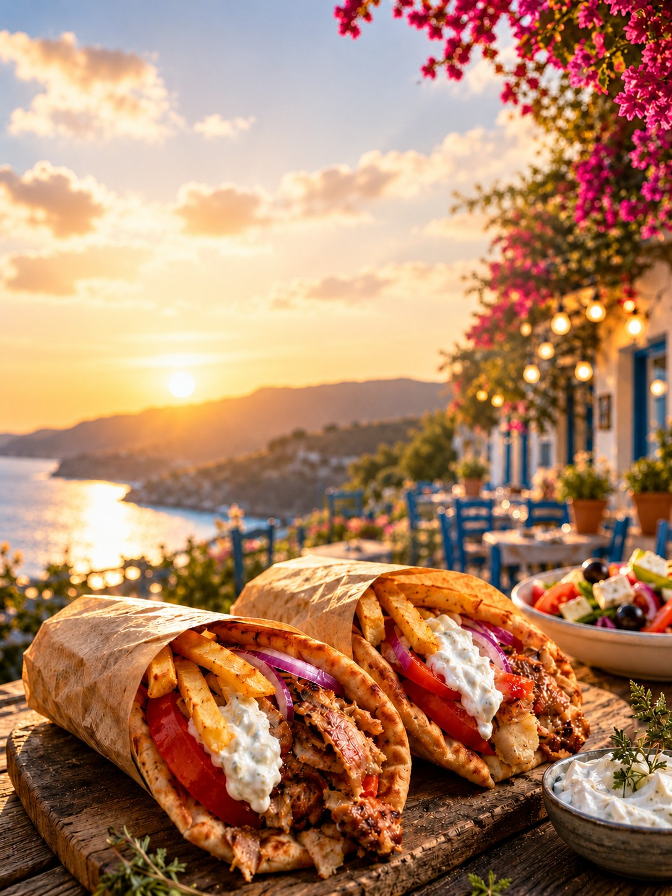

Tip
Marina Cafe en Coffee House staan ook bij het ontbijt. Voor een kleine bestelling is een fooi van ongeveer een euro gebruikelijk.

De gids zocht koffie in de marina, het centrum en net buiten het centrum. Een vaste lijst met prijzen ontbreekt.
Marina Cafe en Coffee House staan ook bij het ontbijt. Voor een kleine bestelling is een fooi van ongeveer een euro gebruikelijk.